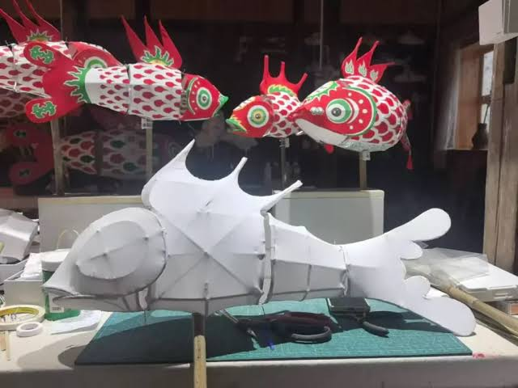

In the mountain villages of Huizhou — a historic region spanning parts of Anhui and Jiangxi provinces — the fish lantern has been carried through New Year streets for over a thousand years. To hold one is to hold a small piece of living history.
The Huizhou fish lantern (徽州鱼灯, Huīzhōu yú dēng) is recognised as part of China's Intangible Cultural Heritage — a designation given to traditions that exist primarily in the hands, minds, and memories of the people who practise them, rather than in objects or texts. This matters, because intangible heritage is inherently fragile. When the people who carry it stop practising, it disappears.
This is one of the reasons I find making fish lanterns so moving. It is not just craft. It is continuity.
The Symbolism of the Fish
In Chinese culture, fish carry deep and layered symbolic meaning. The word for fish (鱼, yú) is a homophone for abundance and surplus (余, yú) — the concept of having more than enough, of life overflowing with good things. Fish are associated with fertility, prosperity, harmony, and the flow of good fortune.
The fish lantern in particular carries the additional symbolism of light in darkness — a beacon, a guide, a source of warmth moving through the night. New Year processions with fish lanterns were believed to chase away misfortune and invite blessings for the year ahead.
"To make a lantern is to make a wish made visible — a light you shaped with your own hands, carried out into the world."
I think about this when I am making one. The act of constructing something that is meant to give light — not receive it, not contain it, but actively give it — feels like the right metaphor for what this whole project is about.
How a Fish Lantern Is Made
The process is more physical than it looks. It begins with selecting bamboo strips — thin, flexible, and strong. These are soaked in water until they become pliable, then bent into the curved ribs of the fish's body and bound at the joints with damp thread or thin wire. The spine runs the length of the fish, and the fins are shaped separately and attached.

Once the frame is complete and dry, translucent paper or silk is stretched over it and glued in place. This is the most meditative part of the process — you work in sections, smoothing out each piece carefully, watching the form become whole. Then comes painting: scales, eyes, fins, the individual personality of your fish.
Finally, a small candle holder or LED light is fitted inside, and the fish glows from within.
We guide you through every step of the process in groups of no more than eight people, so there is plenty of time to ask questions and work at your own pace. Materials are all provided. No prior craft experience is needed — only patience and curiosity.
Why It Matters to Practise
China has over 1,000 items on its national intangible cultural heritage list. Many of them are at risk of fading within a generation — not because people have stopped caring, but because they have stopped practising. The techniques live in the hands of elderly masters, and unless they are passed on, they are lost.
Learning to make a Huizhou fish lantern is, in a small way, an act of cultural stewardship. You are not just making something beautiful for yourself. You are keeping a tradition alive by being one more person who knows how to do it.
And then you carry your glowing fish home, put it somewhere you can see it, and remember that you made this — from raw bamboo and paper and paint, with your own hands, in an afternoon that was entirely your own.
That is quite a lot for one afternoon to contain.